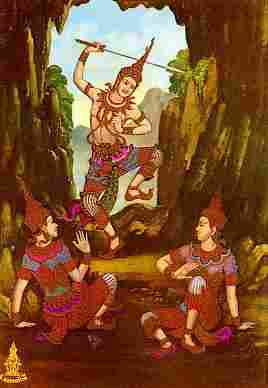

|

|
เรื่องย่อ
���������������ชาดกเรื่องนี้แสดงถึงการบำเพ็ญปัญญาบารมี
คือความรู้ทั่วถึงสิ่งที่ควรรู้. มีเรื่องเล่าว่า มโหสธบัณฑิตเป็นที่ปรึกษาหนุ่มของพระเจ้าวิเทหะแห่งกรุงมิถิลา
ท่านมีความฉลาดรู้ สามารถแนะนำในปัญหาต่าง ๆ ได้อย่างถูกต้องรอบคอบ
เอาชนะที่ปรึกษาอื่นๆ ที่ริษยาใส่ความ ด้วยความดีไม่พยาบาทอาฆาต
ครั้งหลังใช้อุบายป้องกันพระราชาจากราชศัตรู และจับราชศัตรูซึ่งเป็นกษัตริย์พระนครอื่นได้
|
|
เรื่องราวในชาดกโดยย่อ
���������������มโหสถชาดก
ในเมืองมิถิลา มีเศรษฐีผู้หนึ่งมีนามว่า สิริวัฒกะ
ภรรยาชื่อ นางสุมนาเทวี นางสุมนาเทวีมีบุตรชายคนหนึ่ง ซึ่งเมื่อคลอด
ออกมานั้นมีแท่งโอสถอยู่ในมือ เศรษฐีสิริวัฒกะเคยเป็นโรค ปวดศีรษะมานาน
จึงเอาแท่งยานั้นฝนที่หินบดยา แล้วนำมา ทาหน้าผาก อาการปวดศีรษะก็หายขาด
ครั้นผู้อื่นที่มีโรคภัย ไข้เจ็บมาขอปันยานั้นไปรักษาบ้าง ก็พากันหายจากโรค
เป็นที่เลื่องลือไปทั่ว เศรษฐีจึงตั้งชื่อบุตรว่า "มโหสถ"
เพราะทารกนั้นมีแท่งยาวิเศษ เกิดมากับตัว เมื่อมโหสถเติบโตขึ้น
ปรากฏว่ามีสติปัญญาเฉลียวฉลาด กว่าเด็กในวัยเดียวกัน ครั้งหนึ่งมโหสถเห็นว่า
ในเวลาฝนตก ตนและเพื่อนเล่นทั้งหลายต้องหลบฝน ลำบากลำบนเล่นไม่สนุก
จึงขอให้เพื่อนเล่นทุกคนนำเงินมารวมกันเพื่อสร้างสถานที่เล่น
มโหสถจัดการออกแบบอาคารนั้นอย่างวิจิตรพิสดาร นอกจาก ที่เล่นที่กินและที่พักสำหรับคนที่ผ่านไปมาแล้ว
ยังจัดสร้างห้อง วินิจฉัยคดีด้วย เพราะความที่มโหสถเป็นเด็กฉลาดเฉลียวเกินวัย
จึงมักมีผู้คนมาขอให้ตัดสินปัญหาข้อพิพาท หรือแก้ใขปัญหาขัดข้อง
ต่างๆ อยู่ เสมอ ชื่อเสียงของมโหสถเลื่องลือไปไกลทั่วมิถิลานคร
���������������
ในขณะนั้น กษัตริย์เมืองมิถิลา ทรงพระนามว่า พระเจ้าวิเทหราช
ทรงมีนักปราชญ์ราชบัณฑิตประจำ ราชสำนัก 4 คน คือ เสนกะ ปุตกุสะ
กามินท์ และ เทวินทะ บัณฑิตทั้ง 4 เคยกราบทูลว่าจะมี บัณฑิต
คนที่ห้ามาสู่ราชสำนักพระเจ้าวิเทหราช พระองค์จึงโปรดให้ เสนาออกสืบข่าวว่า
มีบัณฑิตผู้มีสติปัญญา ปราดเปรื่องอยู่ที่ใดบ้าง เสนาเดินทางมาถึงบริเวณบ้านของสิริวัฒกะเศรษฐี
เห็นอาคารงดงาม จัดแต่งอย่างประณีตบรรจง จึงถามผู้คนว่าใครเป็นผู้ออกแบบ
คนก็ ตอบว่า ผู้ออกแบบคือมโหสถบัณฑิต บุตรชายวัย 7 ขวบ ของสิริวัฒกะ
เศรษฐี เสนาจึงนำความไปกราบทูลพระเจ้าวิเทหราช พระองค์ตรัสเรียก
บัณฑิตทั้ง 4 มา ปรึกษาว่าควรจะไปรับมโหสถมาสู่ราชสำนักหรือไม่
บัณฑิตทั้ง 4 เกรงว่ามโหสถจะได้ดีเกินหน้าตนจึงทูลว่า ลำพังการออก
แบบตกแต่งอาคารไม่นับว่าผู้นั้นจะมีสติปัญญาสูงถึงขั้นบัณฑิต
ขอให้รอดูต่อไปว่า มโหสถจะมีสติปัญญาเฉลียวฉลาดจริงหรือไม่
���������������
ฝ่ายมโหสถนั้น มีชาวบ้านนำคดีความต่างๆ มาให้ตัดสินอยู่เป็นนิตย์
เป็นต้นว่า ชายเลี้ยงโคนอนหลับไป มีขโมยเข้ามาลักโค เมื่อตามไปพบ
ขโมยก็อ้างว่าตนเป็นเจ้าของโค ต่างฝ่ายต่างถกเถียงอ้างสิทธิ์
ไม่มีใคร ตัดสินได้ว่าโคนั้นเป็นของใคร จึงพากันไปหามโหสถ มโหสถถามชาย
เจ้าของโคว่า เรื่องราวเป็นอย่างไร ชายนั้นก็เล่าให้ฟัง มโหสถจึงถาม
ขโมยว่า "ท่านให้โคของท่านกินอาหารอะไรบ้าง" ขโมยตอบว่า "ข้าพเจ้าให้กินงา กินแป้ง ถั่ว และยาคู" มโหสถถามชายเจ้าของโค
ชายนั้นก็ตอบว่า"ข้าพเจ้าให้โคกิน หญ้าตามธรรมดา" มโหสถจึงให้ เอาใบไม้มาตำให้โคกินแล้วให้กินน้ำ
โคก็สำรอกเอาหญ้าออกมา จึงเป็นอันทราบว่าใครเป็นเจ้าของโคที่แท้จริง
���������������
พระเจ้าวิเทหราชได้ทราบเรื่องการตัดสินความของมโหสถก็ ปรารถนาจะเชิญมโหสถาสู่ราชสำนัก
แต่บัณฑิตทั้งสี่ก็คอยทูล ทัดทานไว้เรื่อยๆ ทุกครั้งที่มโหสถแสดงสติปัญญาในการตัดสินคดี
พระเจ้าวิเทหราชทรงทดลองสติปัญญามโหสถด้วยการตั้งปัญหา ต่าง
ๆ ก็ปรากฏว่า มโหสถแก้ปัญหาได้ทุกครั้ง เช่น เรื่องท่อนไม้ ที่เกลาได้เรียบเสมอกัน
พระเจ้าวิเทหราชทรงตั้งคำถามว่า ข้างไหนเป็นข้าง ปลายข้างไหนเป็นข้างโคน
มโหสถก็ใช้วิธีผูกเชือก กลางท่อนไม้นั้น แล้วหย่อนลงในน้ำ ทางโคนหนักก็จมลง
ส่วนทาง ปลายลอยน้ำ เพราะน้ำหนักเบากว่าไม้ มโหสถก็ชี้ได้ว่า
ทางไหน เป็นโคนทางไหนเป็นปลาย นอกจากนี้มโหสถยังแก้ปัญหาเรื่องต่างๆ
อีกเป็นอันมาก
���������������
จนในที่สุดพระราชาก็ไม่อาจทนรอตามคำ ทัดทานของ บัณฑิตทั้งสี่
อีกต่อไป จึงโปรดให้ราชบุรุษไปพาตัวมโหสถกับบิดามา เข้าเฝ้าพร้อมกับให้นำ
ม้าอัสดรมาถวายด้วย มโหสถทราบดีว่าครั้งนี้ เป็นการทดลองสำคัญ
จึงนัดหมายการอย่างหนึ่งกับบิดา และ ในวันที่ไปเฝ้าพระราชา มโหสถให้คนนำลามาด้วยหนึ่งตัว
เมื่อเข้าไปถึงที่ประทับ พระราชาโปรดให้สิริวัฒกะเศรษฐีนั่งบนที่
อันสมควรแก่เกียรติยศ ครั้นเมื่อมโหสถเข้าไป สิริวัฒกะก็ลุกขึ้น
เรียกบุตรชายว่า "พ่อมโหสถ มานั่งตรงนี้เถิด" แล้วก็ลุกขึ้นจากที่นั่ง
มโหสถก็ตรงไปนั่งแทนที่บิดา ผู้คนก็พากันมองดูอย่างตำหนิ ที่มโหสถทำเสมือนไม่เคารพบิดา
มโหสถจึง ถามพระราชาว่า "พระองค์ไม่พอพระทัยที่ข้าพเจ้านั่งแทนที่บิดาใช่หรือไม่" พระราชาทรงรับคำ
มโหสถ จึงถามว่า "ข้าพเจ้าขอทูลถามว่า ธรรมดาบิดาย่อมดีกว่าบุตร
สำคัญกว่าบุตรเสมอไปหรือ" พระราชา ตรัสว่า "ย่อมเป็นอย่างนั้น
บิดาย่อมสำคัญกว่าบุตร" มโหสถทูลต่อว่า "เมื่อข้าพเจ้ามาเฝ้า พระองค์มีพระกระแส รับสั่งว่าให้ข้าพเจ้านำม้าอัสดรมาถวายด้วย
ใช่ไหมพระเจ้าค่ะ" พระราชาทรงรับคำ มโหสถจึงให้คนนำลาที่เตรียมเข้ามา
ต่อพระพักตร์ แล้วทูลว่า "เมื่อพระองค์ตรัสว่าบิดาย่อมสำคัญ
กว่าบุตร ลาตัวนี้เป็นพ่อของม้าอัสดร หากพระองค์ทรงเห็น เช่นนั้นจริง
ก็โปรดทรงรับลานี้ไปแทนม้าอัสดรเถิดพระเจ้าค่ะ เพราะม้าอัสดรเกิดจากลานี้
แต่ถ้าทรงเห็นว่า บุตรอาจดีกว่าบิดา ก็ทรงรับเอาม้าอัสดรไปตามที่ทรงมีพระราชประสงค์
ถ้าหากพระองค์เห็นว่าบิดาย่อมประเสริฐกว่าบุตรก็ทรงโปรด รับเอาบิดาของข้าพเจ้าไว้
แต่หากทรงเห็นว่าบุตรอาจประเสริฐ กว่าบิดา ก็ขอให้ทรงรับข้าพเจ้าไว้"
การที่มโหสถกราบทูลเช่นนั้น มิใช่จะลบหลู่ดูหมิ่นบิดา แต่เพราะ
ประสงค์จะให้ผู้คนทั้งหลายตระหนักใน ความเป็นจริงของโลก และเพื่อแก้ไขปัญหาที่มีผู้จงใจผูกขึ้น
คือบัณฑิตทั้งสี่นั้นเอง
���������������
พระราชาทรงพอพระทัยในปัญญาของมโหสถจึงตรัสแก่ สิริวัฒกะเศรษฐีว่า
"ท่านเศรษฐี เราขอมโหสถไว้ เป็นราชบุตร จะขัดข้องหรือไม่" เศรษฐีทูลตอบว่า
"ข้าแต่พระองค์ มโหสถยังเด็กนัก อายุ เพิ่ง 7 ขวบ เอาไว้ให้โตเป็นผู้ใหญ่ก่อนน่าจะดีกว่าพระเจ้าค่ะ"
พระราชาตรัสตอบว่า "ท่านอย่าวิตกในข้อที่ว่ามโหสถยังอายุน้อยเลย มโหสถเป็นผู้มี
ปัญญาเฉียบแหลมยิ่งกว่าผู้ใหญ่ จำนวนมาก เราจะเลี้ยงมโหสถในฐานะราชบุตรของเรา
ท่านอย่ากังวล ไปเลย" มโหสถจึงได้เริ่มรับราชการกับ พระเจ้าวิเทหราชนับตั้งแต่นั้นมา
���������������
ตลอดเวลาที่อยู่ในราชสำนัก มโหสถได้แสดงสติปัญญา และความสุขุมลึกซึ้งในการพิจารณาแก้ไขปัญหา
ข้อขัดข้อง ทั้งปวง ไม่ว่าจะเป็นปัญหาที่พระราชาทรงผูกขึ้นลองปัญญา
มโหสถ หรือที่บัณฑิตทั้งสี่พยายาม สร้างขึ้นเพื่อให้มโหสถ อับจนปัญญา
แต่มโหสถก็แก้ปัญหาเหล่านั้นได้ทุกครั้งไป มิหนำซ้ำในบางครั้ง
มโหสถยังได้ช่วยให้บัณฑิตทั้งสี่นั้น รอดพ้นความอับจน แต่บัณฑิตเหล่านั้นมิได้กตัญญูรู้คุณ
ที่มโหสถกระทำแก่ตน กลับพยายามทำให้พระราชาเข้าพระทัยว่ามโหสถด้อยปัญญา
พยายามหาหนทางให้พระราชา ทรงรังเกียจมโหสถ เพื่อที่ตนจะได้รุ่งเรืองในราชสำนัก
เหมือนสมัยก่อน
���������������
มโหสถรุ่งเรืองอยู่ในราชสำนักของพระเจ้าวิเทหราช ได้รับการ สรรเสริญจากผู้คนทั้งหลายจนมีอายุได้
16 ปี พระมเหสีของ พระราชาผู้ทรงรักใคร่มโหสถเหมือนเป็นน้องชาย
ทรงประสงค์ จะหาคู่ครองให้ แต่มโหสถขอพระราชทานอนุญาตเดินทาง
ไปเสาะหาคู่ครองที่ตนพอใจด้วยตนเอง พระมเหสีก็ทรงอนุญาต มโหสถเดินทางไปถึงหมู่บ้านแห่งหนึ่ง
ได้พบหญิงสาวคนหนึ่ง เป็นลูกสาวเศรษฐีเก่าแก่ แต่ได้ยากจนลง
หญิงสาวนั้นชื่อว่าอมร มโหสถปลอมตัวเป็นช่างชุนผ้า ไปอาศัยอยู่กับบิดามารดาของนาง
และได้ทดลอง สติปัญญาของนางด้วยประการต่างๆเป็นต้นว่า ในครั้งแรกที่พบกันนั้น
มโหสถถามนางว่า "เธอชื่ออะไร" นางตอบว่า "สิ่งที่ดิฉันไม่มีอยู่ทั้งในอดีต
ปัจจุบัน และอนาคต นั่นแหล่ะ เป็นชื่อ ของดิฉัน" มโหสถ พิจารณาอยู่ครู่หนึ่งก็ตอบว่า
"ความไม่ตายเป็นสิ่งไม่มีอยู่ในโลก เธอชื่อ
อมร (ไม่ตาย) ใช่ไหม " หญิงสาวตอบว่า ใช่ มโหสถถามต่อว่า
นางจะนำข้าวไปให้ใคร นางตอบว่า นำไป ให้บุรพเทวดา มโหสถก็ ตีปริศนาออกว่า
บุรพเทวดาคือเทวดา ที่มีก่อนองค์อื่นๆ ได้แก่ บิดา มารดา เมื่อมโหสถได้ทดลองสติปัญญาและความประพฤติต่างๆของ
นางอมรจนเป็นที่พอใจแล้ว จึงขอนางจาก บิดา มารดา พากลับ ไปกรุงมิถิลา
เมื่อไปถึงยังเมือง ก็ยังได้ทดลองใจนางอีกโดย มโหสถแสร้งล่วงหน้าไปก่อน
แล้วแต่งกายงดงามรออยู่ในบ้าน ให้คนพานางมาพบ กล่าวเกี้ยวพาราสีนาง
นางก็ไม่ยินดีด้วย มโหสถจึงพอใจนาง จึงพาไปเฝ้าพระราชาและพระมเหสี
พระราชาก็โปรดให้มโหสถแต่งงานอยู่กินกับ นางอมรต่อมา
���������������
บัณฑิตทั้งสี่ยังพยายามที่จะกลั่นแกล้งมโหสถด้วยประการ ต่างๆ
แต่ก็ไม่เป็นผล แม้ถึงขนาดพระราชาหลงเข้าพระทัยผิด ขับไล่มโหสถออกจากวัง
มโหสถก็มิได้ขุ่นเคือง แต่ยังจงรักภักดี ต่อพระราชา พระราชาจึงตรัสถามมโหสถว่า
"เจ้าเป็นผู้มีสติปัญญา หลักแหลมยิ่ง หากจะหวังช่วงชิงราชสมบัติจากเราก็ย่อมได้
เหตุใดจึงไม่คิดการร้ายต่อเรา" มโหสถทูลตอบว่า "บัณฑิตย่อม ไม่ทำชั่ว เพื่อให้ได้ความสุข สำหรับตน แม้จะถูกทับถมให้เสื่อมจาก
ลาภยศ ก็ไม่คิดสละธรรมะด้วยความหลงในลาภยศ หรือด้วย ความรักความชัง
บุคคลนั่งนอนอยู่ใต้ร่มไม้ ย่อมไม่ควรหัก กิ่งต้นไม้นั้น เพราะจะได้ชื่อว่าทำร้ายมิตร
บุคคลที่ได้รับการ เกื้อหนุนอุปการะจากผู้ใด ย่อมไม่ทำให้ไมตรีนั้นเสียไปด้วย
ความโง่เขลา หรือความ หลงในยศอำนาจ บุคคลผู้ครองเรือน หากเกียจคร้าน
ก็ไม่งาม นักบวชไม่สำรวม ก็ไม่งาม พระราชา ขาดความพินิจพิจารณาก็ไม่งาม
บัณฑิตโกรธง่าย ก็ไม่งาม"
���������������
ไม่ว่าบัณฑิตทั้งสี่จะกลั่นแกล้งมโหสถอย่างใด มโหสถก็ สามารถเอาตัวรอดได้ทุกครั้ง
และมิได้ตอบแทน ความชั่วร้าย ด้วยความชั่วร้าย แต่กลับให้ความเมตตากรุณาต่อบัณฑิต
ทั้งสี่เสมอมา นอกจากจะทำหน้าที่พิจารณาเรื่องราว แก้ไขปัญหาต่างๆ
มโหสถยังได้เตรียมการป้องกันพระนครใน ด้านต่างๆ ให้พร้อมเสมอด้วย
และยังจัดผู้คนไปอยู่ตามเมืองต่างๆ เพื่อคอยสืบข่าวว่า จะมีบ้านเมืองใด
มาโจมตีเมืองมิถิลาหรือไม่
���������������
มีพระราชาองค์หนึ่ง ทรงพระนามว่า จุลนีพรหมทัต ครองเมือง อุตรปัญจาล
ประสงค์จะทำสงครามแผ่ เดชานุภาพ จึงทรงคิดการกับปุโรหิตชื่อ
เกวัฏพราหมณ์ หมายจะลวงเอากษัตริย์ ร้อยเอ็ดพระนครมา กระทำสัตย์สาบานแล้วเอาสุราเจือยาพิษ
ให้กษัตริย์เหล่านั้นดื่ม จะได้รวบรวมพระนครไว้ในกำมือ มโหสถ
ได้ทราบความลับจากนกแก้วที่ส่งออกไปสืบข่าว จึงหาทางช่วย ชีวิตกษัตริย์ทั้งร้อยเอ็ดไว้ได้
โดยที่ กษัตริย์เหล่านั้นหารู้ตัวไม่
���������������
พระเจ้าจุลนีทรงเห็นว่ามิถิลา เป็นเมืองเดียวที่ไม่ยอมทำ สัตย์สาบาน
จึงยกทัพใหญ่มุ่งไปโจมตีมิถิลา มีเกวัฏพราหมณ์ เป็นที่ปรึกษาใหญ่
แต่ไม่ว่าจะโจมตีด้วยวิธีใด มโหสถ ก็รู้ทัน สามารถตอบโต้และแก้ไขได้
ทุกครั้งไป ในที่สุดพระเจ้าจุลนีทรงส่งเกวัฏพราหมณ์มาประลองปัญญา
ทำสงครามธรรมกับมโหสถ มโหสถออกไป พบเกวัฏพราหมณ์ โดยนำเอาแก้วมณีค่าควรเมืองไปด้วย
แสร้งบอกว่า จะยกให้ พราหมณ์ แต่เมื่อจะส่ง ให้ก็วางให้ที่ปลายมือพราหมณ์เกวัฏ
เกรงว่าแก้วมณจะตกจึงก้มลงรับแต่ก็ไม่ทัน แก้วมณีตกลงไป กับพื้นเกวัฏก้มลงเก็บด้วยความโลภ
มโหสถจึงกดคอเกวัฏไว้ ผลักให้กระเด็นไป แล้วให้ทหารร้องประกาศว่า
เกวัฏปราหมณ ์ก้มลงไหว้มโหสถ แล้วถูกผลักไปด้วยความรังเกียจ�บรรดาทหารของพระเจ้าจุลนีมองเห็นแต่ภาพเกวัฏพราหมณ์
ก้มลงแทบเท้า แต่ไม่ทราบว่าก้มลงด้วยเหตุใด ก็เชื่อตามที่ ทหารของมโหสถป่าวประกาศ
พากันกลัวอำนาจมโหสถ ถอยหนีไปไม่เป็นกระบวน กองทัพพระเจ้าจุลนีก็แตกพ่ายไป
���������������
เกวัฏพราหมณ์คิดพยาบาทมโหสถอยู่ไม่รู้หาย จึงวางอุบายให้ พระเจ้าจุลนีส่งทูตไปทูลพระเจ้าวิเทหราชว่าจะขอทำสัญญาไมตรี
และขอถวายพระราชธิดาให้เป็นชายา พระเจ้าวิเทหราชทรงมี ความยินดี
จึงทรงตอบรับเป็นไมตรี พระเจ้าจุลนีก็ขอให้ พระเจ้าวิเทหราชเสด็จมาอุตรปัญจาล
มโหสถพยายาม ทูลคัดค้าน พระราชาก็มิได้ฟังคำ มโหสถก็เสียใจว่าพระราชา
ลุ่มหลงในสตรี แต่กระนั้นก็ยังคงจงรักภักดี จึงคิดจะแก้อุบาย
ของพระเจ้าจุลนี มโหสถจึงทูลขออนุญาตไปจัดเตรียมที่ประทับ ให้พระราชาในเมืองอุตรปัญจาล
ก็ได้รับอนุญาต มโหสถจึงให้ ผู้คนไปจัดสร้างวังอันงดงาม และที่สำคัญคือจัดสร้างอุโมงค์ใต้ดิน
เป็นทางเดินภายในอุโมงค์ประกอบด้วยกลไกและประตูลับ ต่างๆซับซ้อนมากมาย
เมื่อเสร็จแล้วมโหสถจึงทูลเชิญ ให้พระเจ้าวิเทหราชเสด็จไปยังอุตรปัญจาล
���������������
ขณะที่พระเจ้าวิเทหราชประทับอยู่ในวัง รอที่จะอภิเษกกับพระธิดาพระเจ้าจุลนี
พระเจ้าจุลนีทรงยก กองทหารมาล้อมวังไว้ มโหสถซึ่งเตรียมการไว้แล้ว
ก็ลอบลงไปทางอุโมงค์เข้าไปใน ปราสาทพระเจ้าจุลนี ทำอุบายหลอกเอาพระชนนี
พระมเหสี พระราชบุตร และราชธิดาพระเจ้าจุลนีมากักไว้ใต้วังที่สร้างขึ้น
นั้นแล้วจึงกลับไปเฝ้าพระเจ้าวิเทหราช พระเจ้าวิเทหราชตกพระทัยว่ากองทหารมาล้อมวัง
ตรัสปรึกษา มโหสถ มโหสถจึงทูลเตือนพระราชาว่า "ข้าพระองค์ได้กราบทูลห้าม
มิให้ทรงประมาท แต่ก็มิได้ทรงเชื่อ พระราชบิดาพระเจ้าจุลนี นั้น
ประดุจเหยื่อที่นำมาตกปลา การทำไมตรีกับผู้ไม่มีศีลธรรม ย่อมนำความทุกข์มาให้
ธรรมดาบุคคลผู้มีปัญญา ไม่พึงทำไมตรีสมาคมกับบุคคลผู้ไม่มีศีล
ซึ่งเปรียบเสมือนงู ไว้วางใจมิได้ ย่อมนำความเดือดร้อน มาสู่ไมตรีนั้น
ไม่มีทางสำเร็จผลได้"
���������������
พระเจ้าวิเทหราชทรงเสียพระทัยที่ไม่ทรงเชื่อคำทัดทาน ของมโหสถแต่แรก
มโหสถจัดการนำพระเจ้า วิเทหราช ไปพบพระชนนี พระมเหสี และพระโอรสธิดาของพระเจ้าจุลนี
ที่ตนนำมาไว้ในอุโมงค์ใต้ดิน แล้วจัดการให้กองทัพที่เตรียมไว้
นำเสด็จกษัตริย์ทั้งหลายกลับไปมิถิลา ส่วนตัวมโหสถเองอยู่ เผชิญหน้า
กับพระเจ้าจุลนี
���������������
เมื่อพระเจ้าจุลนีเสด็จมา ประกาศว่าจะจับพระเจ้าวิเทหราช มโหสถจึงบอกให้ทรงทราบว่า
พระเจ้าวิเทหราชเสด็จกลับมิถิลาแล้วพร้อมด้วย พระราชวงศ์ ของพระเจ้าจุลนี
พระราชาก็ทรงตกพระทัย เกรงว่าพระญาติวงศ์จะเป็นอันตราย มโหสถจึงทูลว่า
ไม่มีผู้ใด จะทำอันตราย แล้วจึงทูลเชิญพระเจ้าจุลนีทอดพระเนตรวังและ
อุโมงค์ที่จัดเตรียมไว้อย่างวิจิตรงดงาม ขณะที่พระเจ้าจุลนีกำลัง
ทรงเพลิดเพลิน มโหสถก็ปิดประตูกลทั้งปวง และหยิบดาบที่ซ่อนไว้
ทำทีว่าจะ ตัดพระเศียรพระราชา พระราชาตกพระทัยกลัว มโหสถจึงทูลว่า
"ข้าพระองค์จะไม่ทำร้ายพระราชา แต่หากจะฆ่า ข้าพระองค์เพราะแค้นพระทัย
ข้าพระองค์ก็จะถวายดาบนี้ให้" พระราชาเห็นมโหสถส่งดาบถวาย
ก็ทรงได้สติ เห็นว่ามโหสถ นอกจากจะประกอบด้วยความสติปัญญาประเสริฐแล้ว
ยังเป็น ผู้ไม่มีจิตใจมุ่งร้ายพยาบาทผู้ใด พระเจ้าจุลนีจึงตรัสขออภัยที่ได้เคยคิดร้ายต่อเมืองมิถิลา
ต่อพระเจ้าวิเทหราชและต่อมโหสถ
���������������
มโหสถจึงทูลลากลับไปมิถิลา จัดให้กองทหารนำเสด็จพระชนนี พระมเหสี
และ พระราชบุตร ของพระเจ้าจุลนีกลับมายังอุตรปัญจาล ส่วนราชธิดานั้นคงประทับอยู่มิถิลา
ในฐานะพระชายาพระเจ้าวิเทหราชต่อไป พระเจ้าจุลนีทรงตรัสขอให้มโหสถมาอยู่กับพระองค์
มโหสถ ทูลว่า "ข้าพระองค์รับราชการรุ่งเรืองในราช สำนักของพระเจ้าวิเทหราช
ผู้เป็นเจ้านายของข้าพระองค์แต่เดิม ไม่อาจจะไปอยู่ที่ อื่นได้หากเมื่อใด
พระเจ้าวิเทหราชสวรรคต ข้าพระองค์จะไป อยู่เมืองอุตรปัญจกาล
รับราชการอยู่ในราชสำนักของพระองค์" เมื่อพระเจ้าวิเทหราชสิ้นพระชนม์
มโหสถก็ทำตามที่ ลั่นวาจาไว้ คือไปรับราชการอยู่กับพระเจ้าจุลนี
และยังถูก กลั่นแกล้งจากเกวัฏพราหมณ์คู่ปรับเก่า แต่มโหสถก็
เอาตัวรอดได้ทุกครั้ง
���������������
มโหสถนอกจากจะมีสติปัญญา เฉลียวฉลาดแล้ว ยังประกอบด้วยคุณธรรมอันประเสริฐ
มีความสุขุมรอบคอบ มิได้หลงใหล ในลาภยศสรรเสริญ ดังนั้นมโหสถจึงได้รับยกย่องสรรเสริญว่าเป็น บัณฑิตผู้มี ความรู้อันลึกซึ้ง
มีสติ ปัญญานั้นประกอบด้วยคุณธรรมอันประเสริฐ ที่กำกับให้ผู้มีสติปัญญาประพฤติปฏิบัติในทางที่ถูกที่ควร
|
คติธรรม
: บำเพ็ญปัญญาบารมี
���������������ปัญญาอันล้ำเลิศนั้นย่อมทำคุณให้แก่บุคคล
ยิ่งกว่ามีทรัพย์นับแสน แม้มิมีปัญญาดั่งปราชญ์ แต่ถ้าเป็นผู้รู้จักคิดให้รอบคอบก่อน
ก็ย่อมเป็นผู้มีปัญญาและประพฤติชอบแล้ว |
--------------------------------------------------------------------------------

กลับหน้าแรก
กลับไปหน้า
Web วัดท่าไทร
ไป
Web วิทยุชุมชนตำบลท่าทองใหม่
|